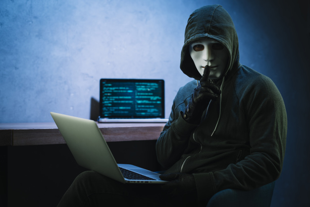

Hacker es una voz del inglés para referirse a una persona o a una comunidad que posee conocimientos en el área de informática y se dedica a acceder a sistemas informáticos para realizar modificaciones en el mismo. Los hackers también son conocidos como “piratas informáticos”
El término hacker tiene diferentes significados. Según el diccionario de los hackers, «es todo individuo que se dedica a programar de forma entusiasta, o sea un experto entusiasta de cualquier tipo», que considera que poner la información al alcance de todos constituye un extraordinario bien

PELIGROSOS POR DONDE SE PARAN....
¿QUE TIPOS EXISTEN?
¿COMO OPERAN?
Según un informe publicado por la compañía de seguridad Kaspersky, el 51% de los españoles se muestra preocupado por el hecho de que un posible programa de malware acceda a las cámaras de sus dispositivos. Para evitar que les graben, el 31% de los encuestados cubre la cámara de su ordenador, una cifra que desciende hasta el 5% si nos referimos a teléfonos móviles.
Lo peor de todo es que hackear la cámara de un ordenador ajeno es más fácil de lo que parece. Las herramientas de control remoto conocidas como RAT (Remote Administration Tool), son, lamentablemente, un tipo de caballo de Troya muy popular. Los ciberdelincuentes suelen recurrir también a programas como Blackshades, contra los cuales se han tomado medidas enérgicas a principios de este año.
Muy en relación con lo anterior, a diferencia de los ordenadores, los usuarios de smartphones y de otros dispositivos apenas se preocupan por la seguridad de los dispositivos. Este hecho puede extenderse a accesorios de uso tan común como las webcams, muy vulnerables, por lo que debemos tener cuidado tanto con los móviles como con las tablets y los portátiles.
SOMOS ESPIAS ESPECIALES
NADIE LOS PUEDE DETENER